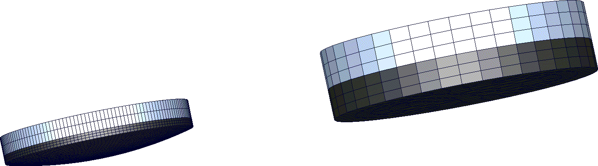
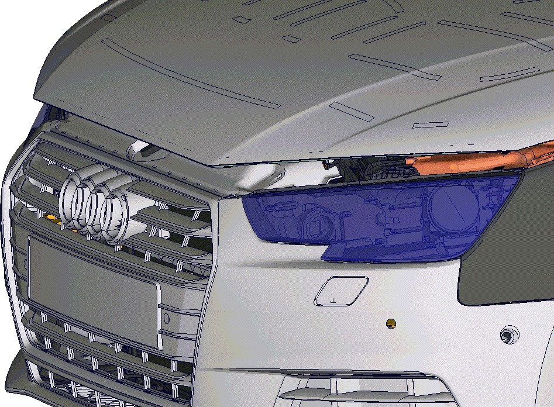
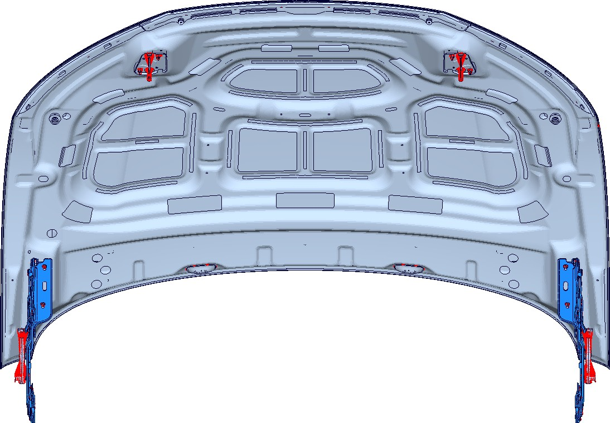

[redacted]/OE [redacted-id]
Telefon [redacted-phone] 573317
Telefax [redacted]
E-Mail [redacted-email] Erstausgabe [redacted-phone]
Änderungsstand [redacted-phone]
 [redacted]
[redacted]
D[redacted]
[redacted]/OE [redacted-id]
Telefon [redacted-phone] 573317
Telefax [redacted]
E-Mail [redacted-email] Erstausgabe [redacted-phone]
Änderungsstand [redacted-phone]
D[redacted]
[redacted-person] Fußgängerschutz
LAH.89D.880.J
Verteiler:
|
|
|
|---|
Inhaltsverzeichnis
Allgemeines 5Anforderungen an Entwicklungspartner 5Lastfälle 6Fußgängerschutz-Lastfälle 6[redacted-person] 6[redacted-person] (entspricht EP [redacted-phone]) 6Abheben aus der Straklage (entspricht EP [redacted-phone]) 7[redacted-person] (entspricht EP [redacted-phone]) 8Zug am Scharnier (EP [redacted-phone]) 9Beul- und Poliersteifigkeit (Entspricht EP [redacted-phone]) 10Frontklappenschließen (entspricht EP [redacted-phone]) 11Quersteifigkeit (entspricht TL 82436) 12Berechnungsmodell 13Impaktormodelle 13Vorderwagenmodell 13Input-Deck-Beschreibung 14Haupt-Inputdeckfile 14Include-Files 17Kopfaufprallsimulation 18Beinaufprall 19Prüffelder 19Validierung 20[redacted-person] 20Materialkarten 21Einheiten und Koordinatensysteme 21Elementgüte 22[redacted-person] für Schalenelemente 22Elementgüte für Schalenelemente 22Elementgüte für SOLID Elemente (empfohlen) 23Elementgrößen 23Auswertung 24Kopfaufprall 24Beinaufprall WG17 TRL 24Beinaufprall FlexPLI 24Umgang mit den Ergebnisfiles 24Qualitätsmanagement 25Dokumentation 26[redacted-person] 26
Abstimmung
Änderungsdokumentation
|
|
|
|---|---|---|
| [redacted-person] |
|
[redacted-person] |
| [redacted-person] |
|
[redacted-person] |
[redacted-person] beschreibt Anforderungen an Modellierungs- und Simulationstechniken, wel- che bei der [redacted-person] eingesetzt werden. [redacted-person] bildet die Grundlage für den zu erbringenden Leistungsumfang des Auftragnehmers.
In diesem Lastenheft wird die anzuwendende Methodik detailliert beschrieben. [redacted-person] resultiert aus der Entwicklungserfahrung der [redacted-co] und ist deshalb für den Entwicklungspro- zess bindend. [redacted-person] der Simulationsergebnisse auf hohem Niveau soll damit si- chergestellt werden. [redacted-person] sind nur dann zulässig, wenn sie in [redacted-person] besser oder bei gleicher Exaktheit effektiver sind und dies der [redacted-co]-Fachabteilung ein- deutig bewiesen und von dieser akzeptiert wurde.
Abweichungen von diesem Lastenheft sind während der Angebotsphase mit der [redacted-person]- tionsauslegung Fußgängerschutz abzustimmen und schriftlich (mit Unterschrift [redacted-co]) festzuhalten. Dieses gilt für vom Entwicklungspartner ausgeschlossene Teilumfänge, und für, aus dessen Sicht, zusätzliche erforderliche Umfänge.
Inhalte dieses Lastenheftes dürfen Dritten ohne ausdrückliche Genehmigung durch die [redacted-co] nicht zugänglich gemacht werden. Sollte durch Nichtbeachtung des [redacted-person] entstehen, behält sich die [redacted-co] das Recht vor, den Auftrag zu stornieren oder zu Lasten des Auftragnehmers, einen Dritten zu beauftragen um dies auszugleichen.
Leistungsportfolio
Vernetzung
Modellierung
Modellaufbau
Analysen
Dokumentation
[redacted-person]
Solver: PamCrash explizit
Postprocessor: CAE-Bench
Bearbeiter:
erfahrene Mitarbeiter
Bei der Fußgängerschutz-Auslegung werden grundsätzlich drei unterschiedliche Impaktor-ar- ten bzw. Prüfkörperarten eingesetzt:
Kopf ([redacted-person]) 3.5kg und 4.5kg,
Bein ([redacted-person]): WG17-Impaktor und FlexPLI,
Mit diesen Impaktoren wird der Vorderwagen auf seine Fußgängerschutzfreundlichkeit hin un- tersucht. Dabei wird das Bein gegen das Stoßfängersystem und der Kopf gegen die Frontklappe und die Frontscheibe geschossen.
Im Folgenden werden die Standard- und Missbrauchslastfälle zur Auslegung der Frontklappen- steifigkeit beschrieben.
Standardumfänge:
[redacted]
[redacted-person] am Scharnier Komfortlastfälle:
Beul- und [redacted]Quersteifigkeit
[redacted-person]:
Abheben aus der Straklage.
[redacted-person] bei der Einarbeitung wird von der betreuenden Berechnungsabteilung ein FE- Modell aus einem Vorgängerprojekt zur Verfügung gestellt. Mit der betreuenden Berechnungs- abteilung ist in Absprache mit der zuständigen Versuchsabteilung vorab zu klären, ob die Origi- nalscharniere oder die steiferen Prüfscharniere verwendet werden (Adapter für Eingelenk-, Mehrgelenkscharniere nach Konzernnorm PV 3551).
[redacted-person] der Steifigkeitslastfälle mit [redacted-person] Implizit ist die Verwendung von Material- typ 100 nicht zulässig.
[redacted-person] zu den jeweiligen Lastfällen sind den zugrundeliegenden Prüfvorschriften zu entnehmen bzw. bei der [redacted-person] einzuholen.
Für diesen Lastfall sind immer die Originalscharniere zu verwenden.
[redacted-person] der Scharniere ist abzubilden. [redacted-person] der Scharniere erfolgt an den Schraubpunkten mit der Karosserie.
Zusätzlich werden die Schließbügeln in der Mitte eines lokalen Koordinatensystems so einge- spannt, dass die y- und z-Verschiebungen und die um x und z-Rotationen gesperrt sind.
Aufeinanderfolgend werden folgende Randbedingungen und Laste als Einzelsteps auf dem Mo- dell eingebracht:
Step 1: Gravitation
Step 2: Vorspannkraft der Schlieβbügel, Puffer, Wasserkastenabdichtung und Gasfeder(n)
Step 3: Einbringen des Aussendrucks
Step 4: Einbringen des Aussendrucks und des Innendrucks.
[redacted-person] an der geschlossenen Fronthaube wird durch Strömungssimulation ermittelt. [redacted-person]- und Innendruck-Werte, die elementweise ausschließlich am Außenblech gemit- telt werden, werden von der Strömungssimulationsabteilung zur Verfügung gestellt.
Ausgewertet werden die z-Verschiebungen der Klappe, relativ gemessen zwischen Step 2 und Step 4.
Am Ende des Step 2 der [redacted-person] wird die Position in z des Außenblechs relativ zur Straklage verglichen.
[redacted-person] Torsion besteht aus zwei Lastfällen. [redacted-person] mit 2-Schloss-System wird hierbei bei Lastfall 1 die Torsionssteifigkeit zwischen den Schließbügeln und bei Lastfall 2 die Torsionssteifigkeit zwischen den äußeren einstellbaren Puffern ermittelt.
Lastfall 1:
<123456>
80 N
<3>
Schließbügel
<123456>
Scharnier
[redacted-person] ist mit den Originalscharnieren durchzuführen. Diese werden an den Karosse- rie-Anschraubstellen fest (Freiheitsgrade 1 bis 6 gesperrt) definiert.
[redacted-person] wird an einem Schließbügel in z-Richtung gesperrt.
Eine in negative z-Richtung wirkende Kraft von 80 N ist am gegenüberliegenden Schließbügel aufzubringen.
Ausgewertet wird die z-Verschiebung am Lastangriffspunkt am Innenblech.
Lastfall 2:
80 N
<3>
Puffer
<123456>
Scharnier
Abweichend zum Lastfall 1 erfolgt die Lagerung in z-Richtung an einem der äußeren einstellba- ren Puffer der Frontklappe. [redacted-person] und Auswertung der z-Verschiebung erfolgt am gegenüberliegenden Puffer.
F
<-3>
<236>
<123456>
Scharnier
<236>
Schlossbügel
<-3>
Puffer (Nur in negative z-Richtung gesperrt. Ein abheben ist möglich)
Legende
F Kraftrichtung
X Abstand MP38/39 (Krafteinleitung) bis MP40/41, X=20mm
MP38/39 Messpunkte 38/39 zur Krafteinleitung an der [redacted-person] MP40/41 Messpunkte 40/41 im Abstand zur [redacted-person]
MP42/43 Messpunkte 42/43 mittig zwischen den klappenseitigen Scharnierbefestigungspunkten
Die geschlossene Frontklappe muss im Scharnierbereich eine ausreichende Aushebesteifigkeit besitzen. [redacted-person] darf sich durch aerodynamische Kräfte während der Fahrt, insbesondere Windschattenfahrt (Abrissströmung), simuliert durch eine Vorspannkraft F nur bis zu einem fest- gelegten Wert (Vergleich mit als ausreichend steif beurteilten Frontklappen) ändern.
[redacted-person] ist mit den Originalscharnieren durchzuführen. Diese werden an den Karosserie- Anschraubstellen fest (Freiheitsgrade 1 bis 6 gesperrt) definiert. Zusätzlich werden die Schließ- bügeln in der Mitte eines lokalen Koordinatensystems so eingespannt, dass die y- und z-Ver- schiebungen und die z-Rotationen gesperrt sind. [redacted-person] wird ebenso an beiden Puffer in Z- Richtung eingespannt (Freiheitsgrad 3 gesperrt).
Eine in positive z-Richtung wirkende Kraft von 200N bzw. 300N ist am Punkt MP38/MP39 aufzu- bringen.
Ausgewertet wird die z-Verschiebung an den Messpunkten MP40/41 bzw. MP42/43.
Stahl
EPDM
[redacted-person]
Kontaktfläche gerundet Kontaktfläche plan,

d=50mm d=70mm
d=50mm d=70mm
Verschiebungen und die x- und z-Rotationen gesperrt sind. [redacted-person] wird ebenso an beidem Puffer fest eingespannt (Freiheitsgrade 1 bis 6 gesperrt).
Es wird an mehreren Positionen geprüft. [redacted-person] werden mit der Versuchsabteilung bzw. mit dem Frontklappen-Konstrukteur fahrzeugspezifisch abgestimmt.
[redacted-person] werden an der Prüfposition normal zur Frontklappenaußenhaut positioniert.
[redacted-person] werden bis zu einer maximalen Prüfkraft von 200N in Belastungsrichtung (normal zur Frontklappenaußenhaut) und anschließend wieder zurück in die Ausgangsposition bewegt.
Auswertung:
Kraft-Weg-Kurve in Belastungsrichtung
Wendepunkte in der Kraft-Weg-Kurve
Steigung der Kraft-Weg-Kurve in den Wendepunkten
Bleibende plastische Verformung nach Entlastung
Ziel des Lastfalls ist es sicherzustellen, dass beim Schließen der Frontklappe genügend Freigang vorhanden ist.
[redacted-person] findet im Gesamt-Vorderwagenmodell statt. Dabei wird die Frontklappe mit der realen Scharnierkinematik soweit aufgedreht, dass die Schließbügel vollständig über dem Fang- haken stehen.

Es soll dann auf die FKL eine Winkelgeschwindigkeit aufgegeben werden, sodass die Front- klappenvorderkante bei Y0 eine Schließgeschwindigkeit von 2,5m/s besitzt.
Eine detaillierte Modellierungsrichtlinie ist bei der Fachabteilung zu erfragen. Auswertung:
Es werden die plastischen Deformationen in den Bauteilen ausgewertet.
Es werden die Kontaktkräfte zwischen Frontklappe und den darunterliegenden Bauteilen aus- gewertet (HSW, Schloss, Stoßfänger …)
[redacted-person] müssen bei geöffneter Frontklappe eine ausreichende Quersteifigkeit besitzen. Durch eine seitlich eingeleitete Kraft ist eine Gesamtverformung nur bis zu einem festgelegten Wert zulässig.
[redacted-person] ist mit den Originalscharnieren und ohne Gasfeder durchzuführen. [redacted-person] ist in geöffneter Position zu simulieren.
Kraftangriffspunkt ist an der Frontklappe am [redacted-person]-Kotflügel-Frontklappe. Gedrückt wird konstant mit 200N in Y [redacted-person].

F=200Nin Y
Randbedingungen:
[redacted-person] bzw. Stützstange: Verschiebungen in Achsrichtung gesperrt (lokales Koordinatensystem)
Scharniergelenke: [redacted-person] mit der Stabilität des Modells kann die Rotation im Schar- niergelenk gesperrt werden.
[redacted-person] zur Karosserie: [redacted-person] gesperrt Eine detaillierte Modellierungsrichtlinie ist bei der Fachabteilung zu erfragen.
Auswertung:
Ausgewertet wird die maximale Verformung am Kraftangriffspunkt und die bleibende plastische Verformung nach Entlastung.
Das FGS-Berechnungsmodell setzt sich aus folgenden Teilen zusammen:
Impaktormodell,
komplettes Vorderwagenmodell (inkl. FGS-Sensorik)
Prüffelder für Gesetz und Verbraucherschutz.
[redacted-person] wird entwicklungsbegleitend durchgeführt. Änderungen an der Fahrzeugfront sind rechnerisch zu bewerten.
[redacted-person] sind die Modelle, die im Volkswagen-Konzern verwendet werden, einzusetzen. Diese sind bei der [redacted-co]-Fachabteilung zu erfragen. Bei lizensierten Impaktoren sind die Lizenzen durch den Auftragnehmer zu beschaffen. [redacted-person] von eigenen Impaktoren ist nicht zulässig. [redacted-person] der Impaktorendatenbank darf ausschließlich für Projekte des Volkswagen-Konzerns erfolgen.
[redacted-person] sollen in einem separaten Include-File definiert werden. [redacted-person] V= xy,z km/h soll zusätzlich im Include-Namen angegeben werden.
[redacted-person]-Kürzel
[redacted-person] 3,5kg ELC35_Vxyz.inc
[redacted-person] 4,5kg ELA45_Vxyz.inc
NCAP Child 3,5kg ENC35_Vxyz.inc
NCAP Adult 4,5kg ENA45_Vxyz.inc
[redacted-person] LL_Vxyz.inc
[redacted-person] FlexPLI LLFP_Vxyz.inc
[redacted-person]-Positionierung innerhalb der Prüffelder soll in Abstimmung mit der [redacted-co] Fachab- teilung abgestimmt werden. Bei den [redacted-person] und Beinaufprall soll grundsätzlich mit einer Anfangsgeschwindigkeit (basiert auf Erfahrung) entwickelt werden, welche 0,4km/h höher ist als die nominelle Geschwindigkeit.
Das komplette Vorderwagenmodell enthält mindestens:
[redacted-person],
Frontscheibe,
Kotflügel,
Frontklappe,
Scharniere,
Motorraumpackage (nur bei der Kopfaufprall-Simulation),
Wasserkastenpackage (nur bei der Kopfaufprall-Simulation),
Frontend inkl. Kühlersysteme,
Scheinwerfer,
Stossfängersystem,
Crashmanagementsystem.
Für den reibungslosen Ablauf zwischen den Simulationsbereichen liegt eine Konvention bei den [redacted-co] Fachabteilungen vor. [redacted-person]-IDs, Element-IDs und PART-IDs müssen die im VW- Konzern abgestimmte Nummerierungskonvention einhalten.
Alle FGS-Modelle müssen eine geeignete Include-File-Struktur (siehe Kapitel 4.3) aufweisen. Je- des der Includes muss in sich abgeschlossen sein, d.[redacted-person] Bezüge auf andere Includes haben. [redacted-person]-übergreifenden Statements wie Kontakte, Klebeverbindungen usw. sollen in einem File zusammengefasst werden.
Die PART-Namen sollen die Teilenummer und den Stand (Datum) der dem FE-Netz zugrunde liegenden CAD-Geometrie enthalten.
Es soll grundsätzlich mit echten Kontakt-Dicken simuliert werden.
Die einzelnen Input-Deck-Namen sollen wie folgt definiert werden: [redacted-person]:
Projekt_Disziplin_Projektphase_Variante_Motor_System_Impaktor_Geschwindigkeit_Schusspunkt.pc
z.B.: AU581_0_xx_K_FGS_S_BFR_293_ oM_P_ELA45_V40p4_500L.pc Lastfall FlexPLI/TRL/Upperleg/Sensorik: Projekt_Disziplin_Projektphase_Variante_Motor_System_Impaktor_Fahrwerk_ZVA_ …
…Geschwindigkeit_Schusspunkt.pc
z.B.: AU581_0_xx_K_FGS_S_BFR_293_oM_P_EN_FP_1BQ_135_V40p4_500L.ini
Disziplin:
_FGS_S_ (Simulation) _FGS_V_ (Versuch) _ST_S_ (Steifigkeit) Die möglichen Projektphasen sind:
[redacted-person] (3stellig):
Konzept KON
P_frei PFR
Baustufe BST
Baulos-n BLN
B_frei BFR
VFF VFF
PVS PVS
Serie SER
Die Variante soll wie folgt definiert werden:
Variante: _001_ - _999_
Die Motorenbezeichnung ist wie folgt zu definieren:
Form des Motors, Anzahl der Zylinder, Art des Motors und Hubraum z.B:
_R4TFSI20_, oder _V8FSI42_ oder _oM_ wenn kein Motor verbaut ist
Falls der gleiche Motor unterschiedliche Leistungsstufe hat soll die Bezeichnung ergänzt werden:
_R4TFSI20KW130_
System:
z.B.
_A_ aufstellendes System, _P_ passives System.
Impaktorkürzel:
[redacted-person] 3,5kg _ELC35_
[redacted-person] 4,5kg _ELA45_
NCAP Child 3,5kg _ENC35_
NCAP Adult 4,5kg _ENA45_ [redacted-person] TRL/ WG-17 _EL_LL_ Legislative FlexPLI _EL_FP_
NCAP FlexPLI _EN_FP_
Geschwindigkeit:
[redacted-person] soll bis auf die erste Nachkommastelle genau angegeben werden (getrennt durch p). Voran gestellt ist der Buchstabe „V“.
Beispiel: [redacted-person] mit 35,4km/h --> _V35p4_
Prüfpunkte-Bezeichnungen für die [redacted-person]:
-[redacted-person] Gesetz
[redacted-person] der Prüfpunkte und die entsprechende Bezeichnung sind im FGS-Funktions- LAH definiert.
-[redacted](ChinaNCAP, C-IASI)
[redacted-person] werden entsprechend ihrer Lage im NCAP Prüffeld (siehe aktuelle Protokolle ChinaNCAP und C-IASI) zur Definition der Grid-Punkte (ohne Berücksichtigung von Fahrwerk- Toleranzen) entsprechend der Abbildung unten bezeichnet.
[redacted-person] erhalten zusätzlich einen Index L oder R zur Bezeichnung der Fahrzeugseite.
[redacted-person] der Prüfpunkte ist in Erprobung und Simulation einheitlich.
Die ersten zwei Stellen beschreiben X-Position der Reihe. 99 Reihen sind möglich. Die erste Reihe (WAD100 bei Y=0) fängt mit 00 an.
[redacted-person] 3 und 4 beschreiben Y-Position des Punktes (Spalte). 99 Punkte pro Reihe möglich. [redacted-person] (bei Y-0) fängt mit 00 an.
[redacted-phone]
[redacted-phone]
[redacted-phone]
[redacted]
[redacted]1080
[redacted]0980
[redacted]0880
[redacted]0780
[redacted]0680
[redacted]0580
[redacted]0480
[redacted]
[redacted]
[redacted]
[redacted-phone]
|
|
|
|---|---|---|
| 1480 |
|
|
| [redacted-person] |
|
|
| [redacted-person] |
|
|
| [redacted-person] | [redacted] |
|
| [redacted-person] | [redacted] | |
| [redacted-person] | [redacted] | |
| [redacted-person] | [redacted] | |
| [redacted-person] | [redacted] | |
| [redacted-person] | [redacted] | |
| [redacted-person] | [redacted] | |
| [redacted-person] | [redacted] | |
| [redacted-person] |
|
|
| [redacted-person] | [redacted-person] |
Prüfpunkt-Bezeichnung für die [redacted-person]:
[redacted-person] werden entsprechend ihrer Lage in Y-Richtung bezeichnet.
[redacted-person] erhalten zusätzlich einen Index L oder R zur Bezeichnung der Fahrzeugseite.
[redacted-person] der Prüfpunkte ist für alle Lastfälle sowie in Erprobung und Simulation einheit- lich.
Beispiele: _0L_ oder _724R_,
_0L2_ oder _724R2_ bei wiederholtem Versuch.
[redacted-person] des [redacted-person] ist bauteil- / baugruppenorientiert in Include-Files zu gestalten. In jedem Include sind im Header zu finden:
Erstelldatum
Name des Erstellers und Organisation
Name des Basis-Includes
Beschreibung der Änderungen.
[redacted-person]-Files sollen wie folgt genannt werden:
Projekt_Projektphase_Ersteller_Includekürzel_VarianteNr.inc
z.B: AU426_0xx_K_FGS_BST_MM_FKL_001.inc
Ersteller:
z.B. _MM_ für [redacted-person]
|
|
|
|---|---|---|
|
|
|
|
|
|
|
|
|
|
|
|
|
|
|
|
|
|
|
|
|
|
|
[redacted-person] |
|
|
|
|
|
|
|
|
|
|
|
|
|
|
|
|
|
|
Include-Variantennummer: _001.inc
Für gesetzliche Untersuchungen wird das worst-case-Package als Überlagerung aller möglichen Varianten incl. Rechtslenkervarianten verwendet.
[redacted-person]-Untersuchungen ist das Package des Testmodells zu verwenden. So- lange das Testmodell nicht bekannt ist, müssen alle Ausstattungsvarianten berücksichtigt wer- den.
Generell ist nur das Package zu berücksichtigen, das beim Kopfaufprall von Einfluss sein kann.
D.[redacted-person], die komplett unterhalb einer FGS-Grenzfläche mit einem Abstand von mehr als 100 mm liegen, sind nicht darzustellen.
[redacted-person]-Nachgiebigkeiten sollen berücksichtigt werden.
[redacted-person] der Frontklappe müssen im Frontklappen-Modell enthalten sein:
Innenblech
Außenblech
Stützkleber
Fanghakenverstärkung
Schlossbügel
Scharnierverstärkungen
Scharniere mit richtig abgebildeter Kinematik
Frontklappenpuffer
Frontklappendichtung
Im Folgenden wird auf die Schusspunkte eingegangen:
Für die Erstellung eines Status soll eine Schusspunktdichte entsprechend Kapitel 4.3.1 verwen- det werden, insbesondere für die Ermittlung von Flächenverteilungen zum Gesetz sowie der Ge- samtpunktzahl ChinaNCAP und CIASI.
Darüber hinaus sind die für diesen Lastfall problematischen Schusspunkte in Abstimmung mit der Fachabteilung und in Abhängigkeit von der vorliegenden Konstruktion festzulegen.
[redacted-person] können aufgrund von Modelländerungen oder neuen Erkenntnissen jederzeit hin- zukommen. Um den Aufwand für die Untersuchungen zu minimieren sind bei lokalen Änderungen nur die Bereiche zu prüfen, die von der Änderung beeinflusst werden.
Toleranzen: [redacted-person] sind in nominaler Lage zu betrachten, mit Ausnahme des Motors, der in z um 4mm nach oben verschoben werden soll.
Besonders sorgfältig sollen folgende Bauteile abgebildet werden:
komplettes Stoßfängersystem (Überzüge mit Schließteilen, Kühlergrillgitter, Crashboxen, Querträger, FGS-Schaum),
Scheinwerfer (bei Bedarf inkl. Innenleben),
eventuelle [redacted-person] (z.[redacted-person], ACC- Sensoren, oder APS-Sensoren, Kamera, …).
Verbindungen, insbesondere am Stoßfängerüberzug müssen möglichst real abgebildet werden, um ein Ausknüpfen der Verbindungen darstellen zu können. [redacted-person] sollten weitestgehend vermieden werden.
[redacted-person] komplexer Bauteile wie Kühler oder Frontend sind mit besonderer Sorgfalt zu betreiben. Für den Fall, dass neue Erkenntnisse aus Versuch und Berechnung an dieser Stelle noch nicht dokumentiert worden sind, sind am Anfang eines Projekts neue Erkenntnisse zu die- sem Themenkomplex zu erfragen.
Bei der Platzierung des Lower-Leg-Impaktors ist die korrekte Fahrzeuglage zu betrachten. [redacted-person] (z.[redacted-person] Hochniveau im Fall eines Fahrzeugs mit Luftfahrwerk) sind ebenso zu betrachten.
Bei der Aufnahme eines Status sind im [redacted-person] alle 50mm in y zu setzen. Die für diesen Lastfall problematischen Schusspunkte sind in Abstimmung mit der Fachabteilung und in Abhängigkeit von der vorliegenden Konstruktion festzulegen. [redacted-person] können aufgrund von Modelländerungen oder neuen Erkenntnissen jederzeit hinzukommen. Um den Aufwand für die Untersuchungen zu minimieren sind bei lokalen Änderungen nur die Bereiche zu prüfen, die von der Änderung beeinflusst werden.
[redacted-person] ist häufig ein Bauteilversagen zu beobachten. Deshalb ist bei der Modellierung darauf zu achten, dass das Versagen der betroffenen Bauteile richtig abgebildet wird. Zunächst kann ohne Versagen simuliert werden. Aus einer Bewertung der entsprechenden Dehnungen kann auf die Wahrscheinlichkeit eines Bruchs zurück geschlossen werden. Die hierfür gültigen Kriterien sind mit der Fachabteilung werkstoffabhängig abzustimmen. Anschließend soll eine Si- mulation mit Versagen erfolgen, oder eine Umkonstruktion, bei der Versagen vermieden wird.
Basierend auf Strakdaten oder Designabtastungen werden die relevanten Prüffelder zum Kopf- aufprall, Beinaufprall und Hüftaufprall mit der aktuellsten von der Fachabteilung freigegebenen Version der [redacted-person] erstellt.
Bei der Erstellung der Prüffelder ist die korrekte Fahrzeuglage festzustellen. [redacted-person]- Trimmlagen (z.[redacted-person] Hochniveau in dem Fall eines Fahrzeugs mit Luftfahrwerk) sind
ebenso zu betrachten. Zudem ist eine Treffertoleranz von 10mm und beim Kopfanprall die 3D- Positionierung mit zu berücksichtigen.
[redacted-person] im Prüffeld sind gegebenenfalls aufzuzeigen. Speziell im Bereich A-Säulen- knoten soll das erzeugte Prüffeld stichprobenartig mit CATIA geprüft werden.
Um eine einwandfreie, realistische Funktion der Gesamtmodelle sicherzustellen, ist für jeden Lastfall eine Validierung durchzuführen und deren Verlauf zu dokumentieren.
[redacted-person] ist anhand von Schlüsselversuchen vorzunehmen.
Aufgabe des Engineeringdienstleisters ist die Optimierung von Methodenschwächen nach der Validierung mit Versuchen.
[redacted-person] wird zudem erwartet, dass er die Gültigkeit seiner Modelle selb- ständig nachweist. [redacted-person] nicht verfügbar sind, sind Plausibilisierungen an- hand vergleichbarer Modelle zulässig.
[redacted-person] sind im PAM CRASH Format zu erstellen.
Es muss stets die neuste seitens [redacted-co] zugelassene Version von PAM-CRASH verwendet werden. (Modellupdate jährlich)
[redacted-person] von Modellen ist die korrekte Platzierung im fahrzeugeigenen Koordina- tensystem zu prüfen und Mängel gegebenenfalls umgehend anzuzeigen.
Stets muss das aktuellste Simualtionsmodell den ESI-Check der aktuell gültigen Version, welche in LOCO verwendet wird, ohne NoGos und Errors erfüllen.
[redacted-person] der Richtlinien zur Modellerstellung ist vor jeder Ergebnisfreigabe in CAE-Bench zu kontrollieren und in einer Checkliste zu dokumentieren.
Die folgenden Modellierungsrichtlinien beschreiben grundlegende Richtlinien, die bei dem Mo- dellaufbau einzuhalten sind.
Zudem muss die Fachabteilung bezüglich Bauteil- und Lastfall-spezifischen Modellierungsrichtli- nien abgefragt werden.
Bei der Nummerierung der Entities ist darauf zu achten, dass die [redacted-co] Nummerierungskonven- tionen eingehalten werden, die von der [redacted-co]-Fachabteilung einzufordern sind.
Es bestehen folgende Anforderungen an die PamCrash Modelle:
anzustrebender Berechnungszeitschritt ist 0.5x10-3 ms
In Fall von Zeitschrittmanipulation durch Stiffness-Scale oder Mass-Scale ist ein Massenreport zu erstellen und der Einfluss der Skalierungen zu bewerten.
Anbindungen und Kontakte zwischen Includes über Groups definieren
Anbindungen und Kontakte innerhalb des untergeordneten Include-Files
[redacted-person]-File muss einzeln mit dem pc-File, Karosserieinclude und evtl. dem Material- Include-File rechenbar sein.
Unnötig und doppelt definierte Kontakte sind zu vermeiden
KJOINTs nur für RBODY Verbindungen verwenden
[redacted-person] sind: 17 statt 11, 24 statt 20, 45 statt 21, 103 statt 102, 106 statt 105,
204 statt 203 und 212 statt 202
[redacted-person] sind darauf zu kontrollieren, dass die zu verbindenden Bauteile wirklich miteinander verbunden sind (PLINKs, TIEDs, etc.), auch durch optische Kontrolle nach der Berechnung.
Die numerische Stabilität und die Aussagequalität der Modelle sind sicherzustellen. [redacted-person]- ten von Instabilitäten sind diese zu untersuchen und zu beheben. [redacted-person] ausgewählter Modellparameter ist die Stabilität nachzuweisen.
Es sind grundsätzlich Materialkarten zu verwenden, welchem dem in der Zeichnung definierten Material der Bauteile entsprechen.
[redacted-person], welche maßgeblich zur Erfüllung der [redacted-person] beitra- gen, sind zusätzlich Kunststofflieferanten- und [redacted-person] erfor- derlich. [redacted-person] hierzu ist nur bei nachgewiesener Performancegleichheit zulässig.
Es gelten folgende Einheiten:
|
|||
|---|---|---|---|
|
|
|
|
|
|
|
|
|
|
|
|
|
|
|
|
|
|
|
|
|
|
|
|
[redacted-person] erfolgt im Fahrzeugkoordinatensystem. Zusätzliche lokale Koordinatensysteme sind zulässig.
|
|
|---|---|
|
|
|
|
|
|
[redacted-person] können als Schalen- oder Volumenelemente abgebildet werden. Bei schlanken Bauteilen ist die Schalenmodellierung vorzuziehen. Bei der Modellbildung mit Volu- menelementen sind mindestens 2 Elemente über der Dicke vorzusehen. [redacted-person] von Schalen erfolgt auf neutraler Faser bzw. Mittelebene. [redacted-person] von Schalen zu Volu- menelementen sind in niedrig beanspruchte, unkritische Zonen zu legen. Bei der gekoppelten Anbindung der Schalen- an Volumenelemente muss das Schalenelement um mindestens 1 Ele- ment ins Volumenmodell hineinragen, um die Momentenübertragung zu gewährleisten.
Radien in hochbeanspruchten Bereichen sind mit hinreichend vielen Elementen zu modellieren. [redacted-person] benachbarter Elemente darf einen Winkel von 30° nicht überschreiten. [redacted-person] darf der Quotient aus Radius/Wandstärke den Wert von 1,5 nicht unterschrei- ten.
Das FE – Modell ist weiterhin auf folgende Punkte zu überprüfen :
🡺 keine doppelten Elemente
🡺 keine freien inneren Kanten
🡺 keine freien, nicht referenzierten Knoten
🡺 einheitliche Ausrichtung der Elementnormalen pro Bauteil
🡺 keine nichtverwendeten Property- bzw. Materialkarten im übergebenen Inputdeck
🡺 keine nicht referenzierten Elemente (z.[redacted-person] ohne Anbindung)
🡺 keine geometrischen Durchdringungen
🡺 es ist auf homogene Netzübergänge zu achten
🡺 keine Elemente mit 2 freien Kanten
|
|
|
|---|---|---|
|
|
|
|
% | 5 |
|
% | 5 |
|
|
3 |
|
|
5 |
*1 Berechnungsvorschrift für den CrashTimeStep ist PAM-CRASH
|
|
||
|---|---|---|---|
|
Einheit |
|
|
|
° |
|
|
|
° |
|
|
|---|---|---|---|
|
5 | 5 | |
|
° |
|
|
|
° |
|
|
|
|
[redacted-person] für SOLID sind empfohlene Werte und somit nicht verpflichtend !
[redacted-person] (HEXA8)
|
|
|
|---|---|---|
|
° |
|
|
° |
|
|
|
|
|
° |
|
|
° |
|
|
|
|
|
||
|
|
|
|
° |
|
|
° |
|
|
° |
|
|
° |
|
|
|
|
|
° |
|
|
° |
|
|
|
|
5.3.3.3 [redacted-person] (TETRA4 und TETRA10)
|
|
|
|---|---|---|
|
|
|
|
|
|
|
|
|
|
|
|
|
|
|
|
|
Für Blech- und Gussbauteile sind folgende Elementgrößen einzuhalten:
🡺 Nenn-Elementkantenlänge: 5 mm
🡺 [redacted-person]: 8 mm
🡺 [redacted-person]: 3 mm
Für [redacted-person] sind folgende Elementgrößen einzuhalten :
🡺 Nenn-Elementkantenlänge: 4 mm
🡺 [redacted-person]: 6 mm
🡺 [redacted-person]: 2 mm
[redacted-person] sind auszuwerten und zu archivieren:
Beschleunigungs-Zeit-Verlauf (ax, ay, az im lokalen Koordinatensystem und ares)
HIC mit Integrationsgrenzen
Weg-Zeit-Verlauf (Weg des Kopfauswerteknoten in z-Richtung des Fzg-Koordinatensystem)
Beschleunigungs-Weg-Verlauf (ares-Δz)
Energieplots.
[redacted-person] sind auszuwerten und zu archivieren:
Beschleunigungs-Zeit-Verlauf (ax)
Biegewinkel-Zeit-Verlauf
Scherweg-Zeit-Verlauf
Energieplots
Kräfte durch die 3 typischen Lastebenen, Summenkraft (Kraft-Zeit-Verlauf).
[redacted-person] sind auszuwerten und zu archivieren:
Längung der Knie-Bänder ACL, PCL, MCL, LCL über Zeit
Tibia-Momente T1, T2, T3, T4 über Zeit
Femur-Momente F1, F2, F3 über Zeit
Energieplots
[redacted-person] sind im System CAE-Bench [redacted-co] innerhalb eines Werktages nach der Berechnung und Auswertung freizuschalten.
[redacted-person] sollen in Abstimmung mit der [redacted-co] Fachabteilung nach dem aktuellen Löschkon- zept in CAE-Bench archiviert werden:
Standardmäßig:
[redacted-person] 1 + autodelete on
Status-Varianten zu wichtigen Meilensteinen im Projektverlauf: [redacted-person] 1 + autodelete off
[redacted-person] (Serienphase)
[redacted-person] 2 + autodelete off + Status-Imputdeck
4 Augen-Prinzip
Sichtprüfung von Animationen und Plausibilisierung
Abweichungen von Modellierungsstandards nur bei nachgewiesener Verbesserung der Ergeb- nisqualität
[redacted-person] hat zu Beginn der Entwicklung einen zentralen hausinternen Qualitätssi- cherungsansprechpartner zu benennen, der das Projekt über den gesamten Entwicklungsablauf betreut. Er ist auch der Ansprechpartner für die Eskalation und Abstellung von Qualitätsprob- leme. [redacted-person] ist offen zu legen. Hierbei sind die Belange des Fuß- gängerschutzes gesondert herauszuarbeiten.
Während des Projektablaufs sind alle Inputdecks, Ergebnisfiles und Auswertungen durch den Berechnungslieferanten bei [redacted-co] in eine Datenbank (CAE-Bench) zu importieren und dort auszuwerten. Hierfür ist das Vorhandensein einer Standleitung zum [redacted-co]-Rechenzentrum oder einer gleichwertigen Anbindung zwingend erforderlich.
[redacted-person] ist eine Excelliste mit einer Variantenübersicht zu führen.
[redacted-person] der zur automatischen Auswertung empfohlenen Storyboards ist mit der [redacted-co] Fachab- teilung abzustimmen.
[redacted-person] müssen zu jeder Variante schriftlich dokumentiert werden (knappe, nachvoll- ziehbare Beschreibung der Variante als pdf und PowerPoint Dokument):
Formulierung der Problemstellung
die Basisvariante (ins Input-Deck und in die Variantendokumentation),
die vorgenommenen Änderungen (mit Bildern),
eine Liste aller Geometriefiles, die dem Modell zugrunde liegen, ist mitzuliefern
aussagekräftige Schnitte der Prüfpunkte,
die in Kapitel 6 aufgeführten Ergebnisse,
das Fazit zur Untersuchung, und eine Empfehlung zum weiteren Vorgehen.
[redacted-person] sind in der jeweils aktuellen Form mit zu beachten:
[redacted-person] Fußgängerschutz von [redacted-id]
Nummerierungskonvention CAE-Modelle im VW-Konzern.
Vertraulich. [redacted-person] vorbehalten. Weitergabe oder Vervielfältigung ohne vorherige schriftliche Zustimmung des Fachbereiches [redacted-co] verboten. Vertragspartner erhalten dieses Dokument nur über die zuständige Beschaffungsabteilung.
VOLKSWAGEN [redacted-co]